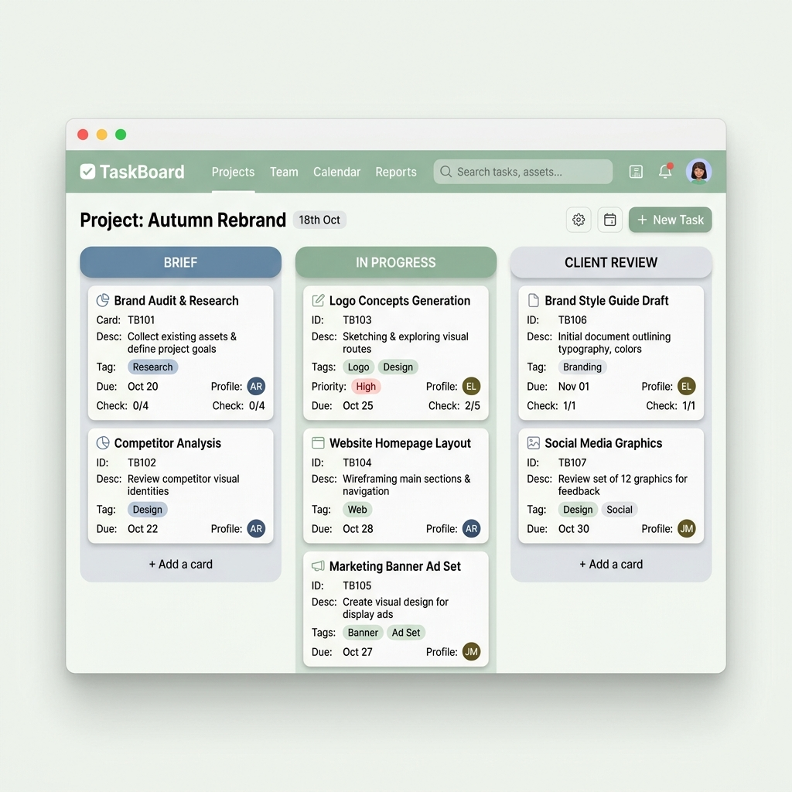

TaskBoard es una herramienta inspirada en la metodología Kanban que te permite planificar, organizar y hacer seguimiento de tus proyectos de diseño desde un único lugar.

Creá un tablero para cada proyecto y mantené toda la información organizada.
Registrá cada trabajo con su descripción, prioridad, etiquetas y fecha límite.
Mové las tareas entre las distintas etapas del proyecto para conocer su estado en todo momento.
Identificá rápidamente qué tareas están próximas a vencer o requieren atención.
Organizá proyectos de identidad visual, redes sociales, interfaces, banners, piezas publicitarias y mucho más mediante una herramienta intuitiva que te permite concentrarte en tu trabajo creativo.